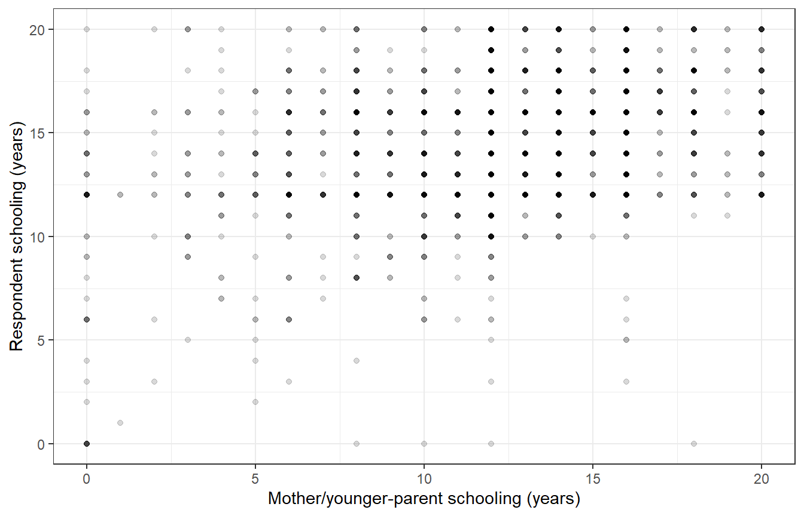

library(tidyverse)
library(tidystata)
gss24 <- readRDS("gss24.rds")23 Statistical tests
Do male and female respondents differ in completed schooling? Is respondents’ schooling associated with their parents’ schooling? A table or graph describes the observed respondents. A statistical test adds a comparison with a stated null hypothesis under a model of repeated sampling. We need the size of the observed difference, its uncertainty, and the respondents included before we interpret a p-value.
By the end of this chapter, you will be able to:
- Define an analysis sample and describe it before testing.
- Compare two means with a Welch t-test and read its confidence interval.
- Test independence in a two-way table while preserving unknown answers.
- Describe a linear association with a Pearson correlation, its sample, and its uncertainty.
- Write a conclusion that distinguishes sample evidence from population and causal claims.
We build on Chapter 6, Chapter 9, Chapter 15, and Chapter 11. Prepare the extract with Appendix A, and save gss24.rds in your project folder. Load tidyverse for table operations and plotting, and tidystata for correlation tables. The tests come from R’s stats package, which is available when R starts; stats:: makes that source explicit. Broom converts test results into tables, so we use broom:: without attaching the package.
23.1 Estimates, uncertainty, and samples
An estimate describes a quantity using the available data: a difference in mean schooling, for example. A null hypothesis specifies a reference value or relationship, such as no mean difference. The test asks how compatible the data are with that null under its assumptions. A p-value is the probability, assuming the null and the model, of a test statistic at least as extreme as the one observed. It is not the probability that the null hypothesis is true.
A 95% confidence interval gives an interval from a procedure that would cover the target quantity in 95% of repeated samples under the assumptions. It helps us distinguish a small estimated difference from a precisely estimated difference. A large p-value does not establish equality, and a small one does not establish practical importance. We keep two-sided alternatives here: differences in either direction are relevant. Choose the question before seeing its p-value.
All examples are unweighted demonstrations using the 2024 GSS extract. They describe the included respondents. The ordinary tests below use assumptions about independent observations and sampling distributions; they do not account for the GSS sampling design or its post-stratification weights. Their intervals and p-values are model-based teaching results, rather than design-corrected population inference.
We define a separate complete-case sample for each question. A complete case has observed values for every variable needed for that calculation. Excluding an unavailable answer neither supplies that answer nor removes possible selection bias. Keep the ID so that the observations remain traceable. educ measures highest year of school completed. sex is the source’s recorded category, not a new measure of gender identity.
23.2 Compare schooling between two groups
First, describe respondents with both schooling and sex recorded. The familiar filter() conditions exclude missing answers. We explicitly order the sex factor as male, then female, using factor() and its levels argument. This determines the direction of the test’s reported difference. The grouped summary uses n() for the number of respondents and mean() for their mean schooling, in years; .by = sex applies these calculations separately to each sex category.
tests_schooling <- gss24 |>
select(id, educ, sex) |>
filter(!is.na(educ), !is.na(sex)) |>
mutate(sex = factor(sex, levels = c("male", "female")))
tests_means <- tests_schooling |>
summarise(n = n(), mean_educ = mean(educ), .by = sex)
tests_means# A tibble: 2 × 3
sex n mean_educ
<fct> <int> <dbl>
1 male 1776 14.3
2 female 2158 14.2
The two rows describe 3934 respondents: 1776 male and 2158 female respondents. Their mean schooling is close: 14.29 and 14.22 years, respectively. These are unweighted group means among observed answers.
stats::t.test() compares means. In the formula educ ~ sex, the variable on the left of ~ is the numerical outcome, and the variable on the right defines the two groups. data = tests_schooling tells R where to find those columns. The default is a two-sided Welch test of a zero difference, with a 95% confidence interval. Welch’s calculation allows unequal variances in the two groups; we do not switch to an equal-variance test simply because group sizes are similar. Assignment stores a test object and leaves the data unchanged.
schooling_test <- stats::t.test(educ ~ sex, data = tests_schooling)
schooling_test
Welch Two Sample t-test
data: educ by sex
t = 0.67022, df = 3792.5, p-value = 0.5028
alternative hypothesis: true difference in means between group male and group female is not equal to 0
95 percent confidence interval:
-0.1197879 0.2442233
sample estimates:
mean in group male mean in group female
14.28604 14.22382 The output identifies the method, test statistic t, approximate degrees of freedom df, p-value, interval, and the two sample means. The statistic expresses the mean difference relative to its estimated standard error. Degrees of freedom enter its reference distribution and can be non-integer for Welch’s test. The direction is male minus female because of the factor order.
broom::tidy() turns the stored test into a one-row tibble. estimate is the difference in years; estimate1 and estimate2 are the group means. conf.low and conf.high are its interval endpoints, and p.value repeats the test’s p-value. $ extracts a named column, and [1] selects its first value when we need a single result in prose.
schooling_tidy <- broom::tidy(schooling_test)
schooling_tidy# A tibble: 1 × 10
estimate estimate1 estimate2 statistic p.value parameter conf.low conf.high
<dbl> <dbl> <dbl> <dbl> <dbl> <dbl> <dbl> <dbl>
1 0.0622 14.3 14.2 0.670 0.503 3792. -0.120 0.244
# ℹ 2 more variables: method <chr>, alternative <chr>
The estimated male-minus-female difference is only 0.062 years. Its 95% interval extends from -0.12 to 0.244 years and includes zero. The p-value is 0.503. This example gives little evidence against a zero difference under the ordinary test assumptions. It does not demonstrate exact equality, and we keep this result rather than searching for a different specification that crosses a significance threshold.
Welch’s procedure still requires independent observations and an adequate approximation for the distribution of the estimated mean difference. Large group sizes help with that approximation, but they do not correct dependence from a survey design, coding errors, or selective missingness.
23.3 Compare college attainment in a table
The next question concerns degrees rather than years. Define college attainment as a bachelor’s or graduate degree, using the exact prepared labels "bachelor's" and "graduate". The other recorded degree levels, including associate/junior college, form the comparison group for this particular definition. This binary measure discards differences among those levels; its meaning must accompany the result.
The %in% expression checks whether each degree matches either label. Missing degrees do not match, so that expression alone would classify unknown answers as non-college. We first test is.na(degree) with if_else() and preserve NA_character_, a missing character value. The inner if_else() then classifies known degrees. We retain the original degree column to check this decision.
tests_degree <- gss24 |>
select(id, degree, sex) |>
mutate(
college = if_else(
is.na(degree), NA_character_,
if_else(degree %in% c("bachelor's", "graduate"),
"College", "Other degree")
)
)
tests_degree |>
count(degree, college)# A tibble: 6 × 3
degree college n
<fct> <chr> <int>
1 less than high school Other degree 362
2 high school Other degree 1817
3 associate/junior college Other degree 360
4 bachelor's College 863
5 graduate College 577
6 NA NA 7
tests_college <- tests_degree |>
filter(!is.na(college), !is.na(sex))
tests_college |>
summarise(n = n(), college_percent = 100 * mean(college == "College"),
.by = sex)# A tibble: 2 × 3
sex n college_percent
<fct> <int> <dbl>
1 male 1784 36.3
2 female 2167 36.4
The degree check retains unknown answers as unknown. In the summary, college == "College" is a logical indicator whose mean is the proportion with college attainment. Multiplication by 100 expresses it as a percentage. Each denominator consists of respondents of that sex with known degree and sex, rather than all GSS respondents. College attainment is very similar in the two groups.
Base R’s table() counts combinations of its inputs. We supply tests_college$college first and tests_college$sex second, producing college categories in rows and sex categories in columns. It returns a count table, not a respondent-level dataset.
college_counts <- table(tests_college$college, tests_college$sex)
college_counts
male female
College 648 788
Other degree 1136 1379stats::chisq.test() takes that table and tests the null that row and column classifications are independent. Its usual approximation compares observed counts with expected counts calculated under independence. For this two-by-two table, R applies a continuity correction by default; the printed method names it. We retain the default. $expected retrieves the expected count table from the result, so we can inspect the approximation rather than relying on the p-value alone.
college_test <- stats::chisq.test(college_counts)
college_test
Pearson's Chi-squared test with Yates' continuity correction
data: college_counts
X-squared = 0, df = 1, p-value = 1college_test$expected
male female
College 648.3989 787.6011
Other degree 1135.6011 1379.3989There are 3951 respondents in this analysis. The expected counts are all comfortably above five, so sparse expected cells are not a concern here. Independence of observations and the unweighted survey limitation still matter. The observed counts are so close to the independence expectation that the default correction gives a chi-square statistic of 0 and a p-value of 1. A reported p-value of one does not prove that population proportions are identical. The small descriptive difference remains the substantive finding, under this definition and sample.
23.4 Relate respondent and parent schooling
Do respondents with more educated parents tend to complete more schooling? The appendix defines maeduc as the mother’s highest year of schooling, or the younger parent’s for same-sex parents. We use that source definition throughout. This is a different coverage requirement from knowing sex or degree: retain respondents with both educ and maeduc observed.
The scatterplot uses the tools from Chapter 11. A point marks an observed pair of schooling values. Because years are recorded in whole numbers, points overlap; partial transparency with alpha = 0.15 makes repeated positions easier to see without changing their coordinates. labs() identifies the units, and the familiar theme_bw() supplies a white background.
tests_parent <- gss24 |>
select(id, educ, maeduc) |>
filter(!is.na(educ), !is.na(maeduc))
nrow(tests_parent)[1] 3432ggplot(tests_parent, aes(x = maeduc, y = educ)) +
geom_point(alpha = 0.15) +
labs(x = "Mother/younger-parent schooling (years)",
y = "Respondent schooling (years)") +
theme_bw()
Figure 23.1 suggests a positive association with substantial variation at each parent-schooling value. Schooling is bounded and concentrated at common completion points. A straight-line association is a useful summary, not a full account of this pattern.
Tidystata’s corr() describes Pearson’s correlation, a measure of linear association from -1 to 1. Positive values mean the variables tend to increase together; zero means no linear association, which can coexist with a curved relationship. Supply the table first, then name the two numeric columns explicitly. The ID identifies respondents and is excluded from the calculation:
parent_correlation <- corr(tests_parent, educ, maeduc)
parent_correlation# A tibble: 1 × 4
var1 var2 r n
<chr> <chr> <dbl> <int>
1 educ maeduc 0.340 3432
The result has one row for this variable pair. var1 and var2 identify the columns, r is their Pearson coefficient, and n is the number of respondents used. corr() uses one common sample with recorded values on every selected variable; here tests_parent already contains complete pairs. The positive coefficient describes greater respondent schooling alongside greater mother/younger-parent schooling in these observed pairs. It supplies neither a p-value nor a confidence interval.
To add uncertainty, use stats::cor.test() with the same two aligned numeric columns. Its default Pearson coefficient agrees with corr(). The default two-sided test has a null correlation of zero and supplies a 95% interval. Both inputs come from the same complete-pair table so the rows remain aligned.
parent_test <- stats::cor.test(tests_parent$educ, tests_parent$maeduc)
parent_test
Pearson's product-moment correlation
data: tests_parent$educ and tests_parent$maeduc
t = 21.162, df = 3430, p-value < 2.2e-16
alternative hypothesis: true correlation is not equal to 0
95 percent confidence interval:
0.3098893 0.3690858
sample estimates:
cor
0.3398241 parent_tidy <- broom::tidy(parent_test)
parent_tidy# A tibble: 1 × 8
estimate statistic p.value parameter conf.low conf.high method alternative
<dbl> <dbl> <dbl> <int> <dbl> <dbl> <chr> <chr>
1 0.340 21.2 1.60e-93 3430 0.310 0.369 Pearson'… two.sided
Respondent and mother/younger-parent schooling have a positive linear association in these 3432 observed pairs: the correlation is 0.34, with a 95% interval from 0.31 to 0.369. The very small p-value indicates incompatibility with zero correlation under the ordinary model assumptions. The coefficient is unit-free; it is not an increase in respondent schooling per year of parent schooling. Nor does it show that changing a parent’s schooling would cause a particular change in the respondent’s schooling.
The usual Pearson test and interval rely on independent pairs and distributional assumptions, commonly expressed as a bivariate normal model. The discrete, bounded measurements here make that an approximation. Extreme observations and nonlinearity can also affect Pearson’s correlation, which is why we inspect the graph before interpreting the numerical result.
NoteOptional: common or pairwise samples
What happens if we include both parent-schooling measures? The appendix defines paeduc as the father’s highest year of schooling, or the older parent’s for same-sex parents. Start from the full GSS extract and select the three schooling columns explicitly:
parent_common <- corr(gss24, educ, maeduc, paeduc)
parent_common# A tibble: 3 × 4
var1 var2 r n
<chr> <chr> <dbl> <int>
1 educ maeduc 0.347 2649
2 educ paeduc 0.375 2649
3 maeduc paeduc 0.604 2649
There is one row for each distinct pair of selected variables. All three correlations use the same 2649 respondents, those with all three schooling answers recorded. Even the educ-maeduc pair now excludes respondents whose paeduc is missing. Its coefficient changes from 0.34 to 0.347 because the included respondents changed; their recorded schooling values did not.
Tidystata’s pwcorr() instead uses the available observations for each pair by default. Call it with the same table and selected variables:
parent_pairwise <- pwcorr(gss24, educ, maeduc, paeduc)
parent_pairwise# A tibble: 3 × 5
var1 var2 r n p
<chr> <chr> <dbl> <int> <dbl>
1 educ maeduc 0.340 3432 1.60e- 93
2 educ paeduc 0.379 2855 2.01e- 98
3 maeduc paeduc 0.606 2657 5.53e-266
The columns var1, var2, r, and n have the same meanings. Here n is specific to each pair: 3432 respondents for educ with maeduc, 2855 for educ with paeduc, and 2657 for the two parental measures. The additional column p gives a two-sided p-value for a zero Pearson correlation. These are unadjusted separate tests; several small p-values are not independent confirmations of one claim. pwcorr() does not supply confidence intervals.
Common samples hold the respondents fixed across comparisons. Pairwise samples retain more available pairs, but differences between coefficients can reflect sample composition as well as different relationships. Retaining more observations does not resolve selective missingness. Choose the sample rule for the research question rather than for a smaller p-value. The same unweighted survey and causal cautions apply to both tables.
23.5 Put the evidence together
The three questions do not use the same respondents. tibble() constructs a small table from named columns, c() combines the three entries in each column, and nrow() counts each analysis sample. knitr::kable() displays this summary as a table; its Quarto caption supplies the automatic number.
test_samples <- tibble(
Question = c("Mean schooling by sex", "College attainment by sex",
"Respondent and mother/younger-parent schooling"),
Required = c("educ, sex", "degree, sex", "educ, maeduc"),
Respondents = c(nrow(tests_schooling), nrow(tests_college),
nrow(tests_parent))
)
knitr::kable(test_samples)| Question | Required | Respondents |
|---|---|---|
| Mean schooling by sex | educ, sex | 3934 |
| College attainment by sex | degree, sex | 3951 |
| Respondent and mother/younger-parent schooling | educ, maeduc | 3432 |
Table 23.1 records the denominators needed for a conclusion. In this unweighted extract, male and female respondents have very similar mean schooling and college-attainment proportions. The Welch interval permits small differences on either side of zero, and the corrected table test gives little evidence against independence. Respondent and mother/younger-parent schooling have a positive correlation of about 0.34, with considerable variation around the pattern. These statements concern different observed-answer samples. Their model-based intervals and tests do not repair missingness, account for the complex survey design, or establish causal effects.
Review:
- Define the estimate, null hypothesis, and included respondents before testing.
t.test()compares two means and returns an interval for their difference; factor order determines its direction.- Preserve unknown classifications before constructing a cross-tabulation with
table(). chisq.test()compares observed counts with an independence expectation; inspect expected counts and the printed method.corr()reports Pearson coefficients and counts on one common complete sample;cor.test()adds a test and confidence interval for a pair.tidy()converts a test into a table, but interpretation still requires units, uncertainty, assumptions, and a denominator.- Optional:
pwcorr()uses a separate available sample for each pair and reports unadjusted p-values; compare the counts before interpreting coefficients.
Chapter 24 extends the parental-schooling question by considering age and sex together on a shared analysis sample.
23.6 Exercises
- Repeat the Welch comparison with female before male in the sex factor. Predict what happens to the estimated difference, interval, and two-sided p-value, then verify it.
- A researcher defines college with
if_else(degree %in% c("bachelor's", "graduate"), "College", "Other degree"). Diagnose the treatment of missing degrees and produce a corrected classification. Count the affected source answers. - Repeat the complete-pair correlation using
paeduc, the father/older-parent variable. Usecorr()to report its coefficient and count, thencor.test()for its confidence interval. Why can its difference from themaeducresult reflect coverage as well as a different parent measure? Optional: Comparecorr()andpwcorr()usingeduc,maeduc, andpaeducfrom the full extract. Explain why adding the third variable changes the common-sample result for the original pair. - Country-level contrast. This exercise returns to the familiar country data to distinguish a country-level association from the respondent-level relationships above. Describe the association between
lexpandgnppcinlifeexp. Give the complete-country count and Pearson coefficient. Explain why this is neither an individual-level relationship nor a population-weighted, random-sample estimate for the world’s people.
23.7 Worked answers
NoteReverse the comparison
Start in a fresh session with the saved extract:
library(tidyverse)
library(tidystata)
answer_gss24 <- readRDS("gss24.rds")answer_schooling <- answer_gss24 |>
select(id, educ, sex) |>
filter(!is.na(educ), !is.na(sex)) |>
mutate(sex = factor(sex, levels = c("female", "male")))
answer_welch <- stats::t.test(educ ~ sex, data = answer_schooling)
answer_welch_tidy <- broom::tidy(answer_welch)
answer_welch_tidy# A tibble: 1 × 10
estimate estimate1 estimate2 statistic p.value parameter conf.low conf.high
<dbl> <dbl> <dbl> <dbl> <dbl> <dbl> <dbl> <dbl>
1 -0.0622 14.2 14.3 -0.670 0.503 3792. -0.244 0.120
# ℹ 2 more variables: method <chr>, alternative <chr>
The same 3934 respondents now give a female-minus-male estimate of -0.062 years. The interval runs from -0.244 to 0.12 years. Reversing the subtraction negates the estimate and reverses the negated interval endpoints. The two-sided p-value remains 0.503 because the size of the standardized difference is unchanged. Always name the subtraction when reporting it.
NotePreserve unknown degrees
Load the packages and extract independently:
library(tidyverse)
library(tidystata)
answer_gss24 <- readRDS("gss24.rds")answer_degree <- answer_gss24 |>
select(id, degree) |>
mutate(
college = if_else(
is.na(degree), NA_character_,
if_else(degree %in% c("bachelor's", "graduate"),
"College", "Other degree")
)
)
answer_degree |>
count(degree, college)# A tibble: 6 × 3
degree college n
<fct> <chr> <int>
1 less than high school Other degree 362
2 high school Other degree 1817
3 associate/junior college Other degree 360
4 bachelor's College 863
5 graduate College 577
6 NA NA 7
answer_unknown_degree <- answer_degree |>
filter(is.na(degree))
nrow(answer_unknown_degree)[1] 7answer_unknown_degree# A tibble: 7 × 3
id degree college
<int> <fct> <chr>
1 954 NA NA
2 1273 NA NA
3 1558 NA NA
4 3346 NA NA
5 3726 NA NA
6 3893 NA NA
7 3984 NA NA
There are 7 unknown degrees in the source. A missing degree is not in the named set, so the researcher’s expression assigns those respondents to "Other degree". The outer if_else() preserves their missing status instead. We can then exclude them for a known-degree comparison and state that denominator. Changing an unknown answer to a known non-college classification would alter the measurement.
NoteCheck father/older-parent coverage
Restore the saved extract in a new session:
library(tidyverse)
library(tidystata)
answer_gss24 <- readRDS("gss24.rds")answer_father <- answer_gss24 |>
select(id, educ, paeduc) |>
filter(!is.na(educ), !is.na(paeduc))
answer_mother <- answer_gss24 |>
select(id, educ, maeduc) |>
filter(!is.na(educ), !is.na(maeduc))
nrow(answer_father)[1] 2855nrow(answer_mother)[1] 3432answer_father_correlation <- corr(answer_father, educ, paeduc)
answer_father_correlation# A tibble: 1 × 4
var1 var2 r n
<chr> <chr> <dbl> <int>
1 educ paeduc 0.379 2855
answer_father_test <- stats::cor.test(answer_father$educ, answer_father$paeduc)
answer_father_tidy <- broom::tidy(answer_father_test)
answer_father_tidy# A tibble: 1 × 8
estimate statistic p.value parameter conf.low conf.high method alternative
<dbl> <dbl> <dbl> <int> <dbl> <dbl> <chr> <chr>
1 0.379 21.9 2.01e-98 2853 0.348 0.410 Pearson'… two.sided
The father/older-parent analysis includes 2855 complete pairs, compared with 3432 mother/younger-parent pairs. Its correlation is 0.379, with an interval from 0.348 to 0.41. This is a positive linear association. The two estimates concern different parent measures and different observed-answer samples. Their numerical difference alone does not establish a stronger relationship for one parent, and two separate significance tests do not test the difference between correlations.
Optional comparison. Use the full extract so that each function applies its own sample rule:
answer_common <- corr(answer_gss24, educ, maeduc, paeduc)
answer_common# A tibble: 3 × 4
var1 var2 r n
<chr> <chr> <dbl> <int>
1 educ maeduc 0.347 2649
2 educ paeduc 0.375 2649
3 maeduc paeduc 0.604 2649
answer_pairwise <- pwcorr(answer_gss24, educ, maeduc, paeduc)
answer_pairwise# A tibble: 3 × 5
var1 var2 r n p
<chr> <chr> <dbl> <int> <dbl>
1 educ maeduc 0.340 3432 1.60e- 93
2 educ paeduc 0.379 2855 2.01e- 98
3 maeduc paeduc 0.606 2657 5.53e-266
answer_common uses respondents with all three values recorded for every coefficient. answer_pairwise uses the complete observations for each pair, so its counts differ. Adding paeduc therefore removes some otherwise complete educ-maeduc pairs from the common sample, changing the coefficient without changing any measured value. The pairwise table’s first row recovers the earlier two-variable Pearson result. More available pairs do not establish that missingness is harmless, and the printed p-values remain unadjusted model-based results.
NoteDescribe a country association
Load the packages in a fresh session. This answer uses only the packaged lifeexp table supplied by tidystata; each row represents a country:
library(tidyverse)
library(tidystata)answer_countries <- lifeexp |>
select(country, lexp, gnppc) |>
filter(!is.na(lexp), !is.na(gnppc))
nrow(answer_countries)[1] 67answer_country_test <- stats::cor.test(answer_countries$lexp,
answer_countries$gnppc)
answer_country_tidy <- broom::tidy(answer_country_test)
answer_country_tidy# A tibble: 1 × 8
estimate statistic p.value parameter conf.low conf.high method alternative
<dbl> <dbl> <dbl> <int> <dbl> <dbl> <chr> <chr>
1 0.733 8.68 1.79e-12 65 0.598 0.827 Pearson'… two.sided
Across 67 countries with both values observed, life expectancy in years and GNP per person in US dollars have a positive Pearson coefficient of 0.733. This describes a linear component of a country-level relationship, which can also curve. Each country contributes one pair regardless of population. These selected countries are not presented as an independent random sample of the world’s people, so the printed model-based interval and p-value do not justify that population claim. Inferring a personal income-health relationship from this country association would confuse levels of analysis.